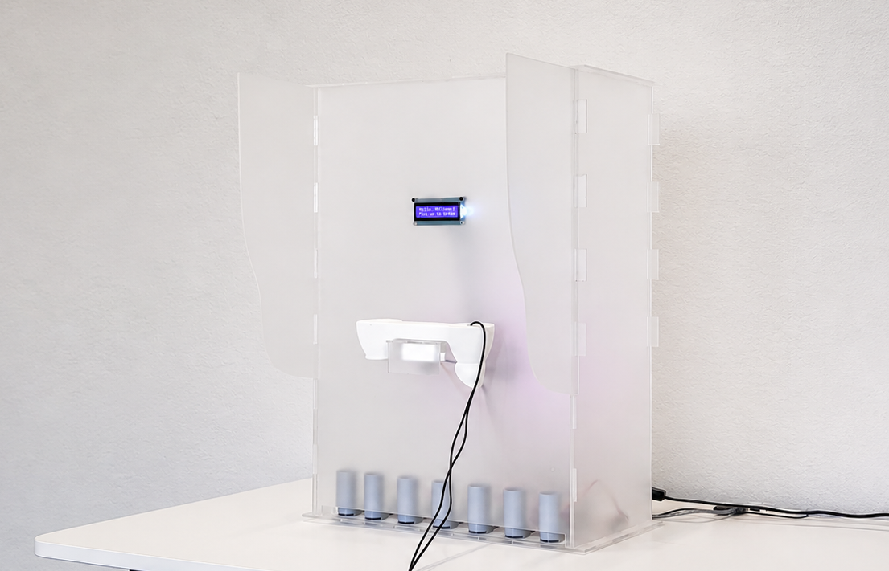
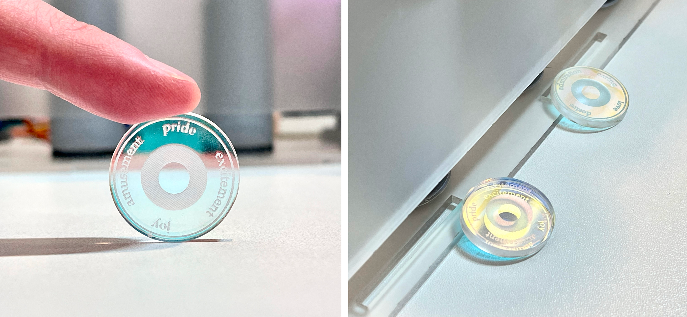
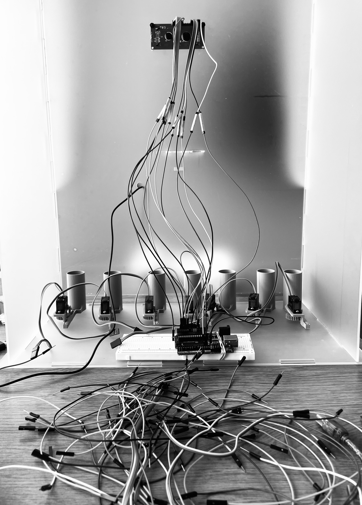
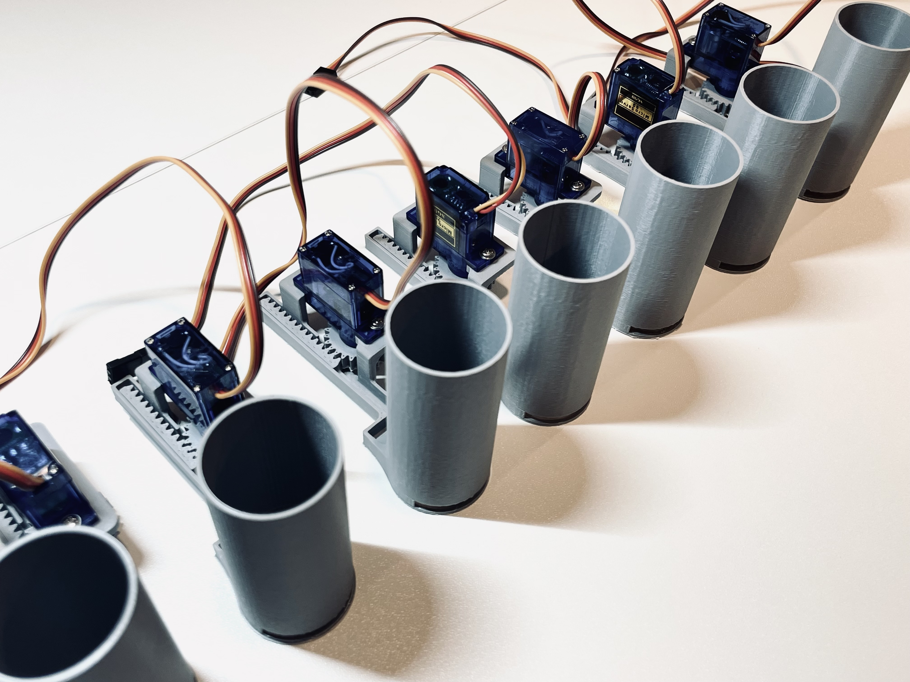

Project Statement
EmoBank is a speculative interactive installation that reimagines emotional expression as a form of value within an emotional economy. In productivity-driven cultures, emotional expression is often constrained by norms that prioritize efficiency and social harmony, resulting in unequal access to safe spaces for articulating vulnerability and leaving many individuals' emotional experiences unrecognized or suppressed. Rather than treating emotion as an internal state to be discovered, this project shifts attention toward the act of expression itself, emphasizing the effort and vulnerability embedded in speaking and emotional articulation.

The device combines real-time speech recognition, AI-based sentiment analysis, and a mechanical dispensing system to translate spoken expression into physical tokens, materializing expression as a tangible outcome. It creates a reflective space in which users can engage with their own emotional articulation without immediate social consequence or evaluative feedback. By introducing the notion of a speculative emotional economy, EmoBank frames emotional expression through the lens of value and exchange. This project operates as a critical and experiential artifact that exposes the limitations of existing approaches to emotion in computational systems, and it invites reflection on how future social and technological infrastructures might acknowledge emotional expression as an effortful and situated human act.
Background & Related Work
In the productivity culture, individuals are subjected to relentless pressure to regulate their emotions in ways that prioritize social harmony and operational efficiency (Smoliak et al., 2025). This environment creates a structural injustice where emotional norms are embedded in unquestioned habits and institutional rules, often treating vulnerability as a liability rather than a human necessity. This results in negative emotion inequality, a state where already vulnerable populations face a disproportionate risk of harm because they are denied the safe “hermeneutical opportunity” to comprehend and express their inner experiences without social penalty (Puddifoot, 2025). The capacity to express emotional distress safely is unevenly distributed (Pismenny et al., 2024). Pervasive social stereotypes frequently characterize affective states like anxiety as a sign of personal weakness, leading individuals to engage in self-stereotyping. This internalizing of stigma creates a significant barrier to help-seeking; individuals may withhold their “risky testimony” or unexpressed emotional labor to avoid confirming negative social expectations, effectively trapping them in a cycle of neglected affect (Puddifoot, 2025). Although spaces such as therapy or close interpersonal relationships may provide avenues for emotional release, these are not universally available or free from social consequences.
Digital interventions offer a unique opportunity to divert prevailing social barriers. Recent research indicates that AI-based systems can facilitate emotional regulation by increasing accessibility and reducing the stigma associated with seeking help (Mondal et al., 2025). Because AI lacks social prejudices and the “moralizing” tendencies often present in human observers, it can create an emotionally safe space for disclosure where individuals feel more comfortable articulating subjective, covert, or even stigmatized experiences (Neuhaus et al., 2025; Roshanaei et al., 2026). By demonstrating an open and non-judgmental attitude, these agents reduce anxiety about social evaluation, allowing users to express feelings, such as embarrassment or intense vulnerability, without the risk of rejection or immediate social repercussions. This perceived safety and lack of conversational dominance can lead to deeper affective self-disclosure, encouraging individuals to own their experiences and provide longer, more emotionally rich narratives (Jiang et al., 2026).
Despite the affective turn in recent technological research, existing approaches tend to generalize emotion analysis as a mere classification task, focusing on the detection, identification, and quantification of specific internal states (García-Hernández et al., 2024). While these systems aim to make human affect legible to machines, they often treat emotions as “surface-level information” to be processed mathematically, thereby overlooking the human-specific factors, vulnerability, and contextual complexity inherent in the act of expression (Li et al., 2024). This reflects a broader limitation in current technological and social infrastructures, the absence of frameworks that treat emotional expression not as data to be measured or behavior to be regulated for productivity, but as a form of emotional labor that carries intrinsic value. Systems must begin to acknowledge the effort of expression itself as a valuable exchange.
Conceptual Framework: Toward a Speculative Emotional Economy
In conventional economic terms, currency is defined through properties such as value, exchange, accumulation, and scarcity. These properties provide a critical lens through which emotional expression can be reconsidered as an effortful and socially mediated act. This project reframes emotional expression as a form of value, shifting attention from internal emotional states to the act of expression itself. Rather than proposing a literal economic system, it introduces a speculative mapping that reveals how emotional expression already operates within implicit structures of value.
Within this framework, value is not assigned to specific emotional categories, but to the effort involved in expressing them. Speaking, hesitating, and articulating feelings require vulnerability, risk, and social exposure. In this sense, emotional expression can be understood as a form of expenditure.
Tokens do not evaluate the accuracy, authenticity, or quality of emotion — they function as symbolic units of recognition that make visible the otherwise intangible labor of expression.
By materializing expression in this way, the system constructs a speculative emotional economy in which expression is acknowledged through tokenization, rather than validated through interpretation or reciprocal response from others. As a speculative and critical artifact, it creates a space for expression without consequence, allowing users to vent without the burden of reciprocity.
EmoBank: System & Experience Design
EmoBank is designed as a semi-enclosed device that balances accessibility with a sense of privacy, featuring partial coverings on both sides of the structure (Figure 2, left). The overall form resembles a telephone booth, incorporating a handset that users can pick up to speak into the system, as shown in Figure 2 (right). This familiar interaction evokes the experience of calling a friend to share one’s thoughts or daily experiences, creating a relatable and emotionally accessible interaction space.
The structure is constructed from frosted acrylic, allowing the presence of a user inside to remain visible while obscuring detailed actions. This semi-transparency helps maintain a sense of safety and privacy, encouraging users to express themselves without feeling fully exposed. At the center of the surface, a small screen provides minimal guidance and navigational cues to support user interaction. In the lower part of the device, a narrow slot serves as the output point where tokens are dispensed.

System Overview
The pipeline of this project translates spoken expression into tangible artifacts. Users are invited to engage with the system by speaking through a microphone interface; their speech is captured and processed in real time. This process culminates in the release of a token from one of several mechanical channels, each corresponding to a category of detected emotional expression. By structuring the interaction in this way, EmoBank establishes a closed loop between input and output: expression enters the system and is returned as a tangible artifact.
Interaction Flow
Upon entering the installation, users encounter a handset integrating a microphone as the primary point of engagement. There are no strict instructions regarding what to say or how to say it, allowing individuals to approach the system on their own terms. A small screen provides minimal guidance through four stages:
The final stage is accompanied by the physical release of a token from the lower part of the device, marking the completion of an interaction cycle. The portability of the token creates opportunities for users to share their experience with others beyond the installation.
Token Design
Emotion mapping strategy. The system's sentiment analysis module detects up to 28 distinct emotional categories, grouped into seven broader clusters:

Material representation. The token is designed in the form and scale of a coin, directly referencing the project's conceptual framing of emotion as currency. This physical form reinforces the idea of emotional expression as something that can be exchanged, collected, or carried. Each token is fabricated from iridescent acrylic, producing shifting colors depending on the viewing angle — a material quality that reflects the inherent complexity and variability of emotional experience, resisting a single fixed representation. Several token designs were explored before arriving at the final version, as shown in Fig. 4.

Technical Implementation
System Architecture
EmoBank is structured as a sequential processing pipeline that connects audio input to physical output, consisting of four primary stages: (1) audio capture, (2) speech-to-text processing, (3) LLM-based sentiment analysis, and (4) actuation.
Audio input is collected through a USB microphone and transmitted to a local computing unit for real-time processing. The audio signal is first converted into text using an offline automatic speech recognition model (Vosk). This design reduces latency and ensures stable performance in exhibition environments. The resulting transcription is then processed by a large language model (LLM)-based sentiment analysis module. It is used to infer broader affective tendencies and map them into a simplified set of predefined emotional categories. Based on this mapping, the system determines a corresponding output channel, which triggers a mechanical dispensing mechanism controlled by a microcontroller. This completes the full pipeline from spoken expression to physical artifact generation.

Hardware System
The hardware system is built around an Arduino microcontroller, which coordinates sensing, processing signals, and actuation, as shown in Fig.5. The system integrates the following components: A USB microphone serves as the primary input device for capturing spoken audio. A liquid crystal display (LCD) screen is positioned at eye level to provide real-time system feedback. For physical output, the system employs seven servo motors, each connected to a dedicated token channel, as shown in Fig.6. Each servo controls a gate mechanism that releases a single physical token when activated. This modular configuration allows different emotion categories to correspond to separate physical output streams.

To improve interaction robustness, an ultrasonic sensor is embedded under the handset, as shown in Fig 7. This sensor detects proximity and movement of the handset, allowing the system to infer when a user begins or ends an interaction. It ensures that speech input is only processed during active engagement, reducing unintended activations. The signal from the ultrasonic sensor is also used to update the LCD screen, reflecting system states such as “Listening” and “Processing” in real time.

Critical Reflections & Future Steps
While EmoBank proposes a speculative framework for rethinking emotional expression as value, it is important to acknowledge the limitation in both its conceptual and technical design. The use of AI-based sentiment analysis introduces interpretive bias. Large language models and emotion recognition systems are trained on datasets that may not fully capture cultural, linguistic, or individual variations in emotional expression. As a result, the system’s interpretation of speech may not consistently align with the user’s intended emotional meaning.
During the EXPO on April 24th, 2026, it was great to see many visitors come to experience the device, receive tokens, and take them home after the event. It was exciting to observe how much people liked the design and the tokens (many seemed to enjoy having something tangible to carry with them, as shown in Fig.8.) Several visitors also provided feedback on the overall design of the device. In particular, they expressed a desire for a more “safe” and enclosed space, as well as the addition of lighting on the top of the device. For future iterations, I plan to redesign and enlarge the side panels to create a more private space for users. This aligns with my initial design inspiration, as shown in Fig. 9, and would help enhance both privacy and the overall immersive experience.


References
- Smoliak, O., Rice, C., Rudder, D., Tseliou, E., LaMarre, A., LeCouteur, A., Gaete, J., Davies, A., & Henshaw, S. (2025). Emotion regulation as affective neoliberal governmentality. Family Process, 64(1), e13064. https://doi.org/10.1111/famp.13064
- Puddifoot, K. (2025). Affect, attention, and injustice: The injustice of Neglected Affect. Philosophical Psychology, 0(0), 1–32. https://doi.org/10.1080/09515089.2025.2588383
- Pismenny, A., Eickers, G., & Prinz, J. (2024). Emotional Injustice. Ergo an Open Access Journal of Philosophy, 11(0). https://doi.org/10.3998/ergo.5711
- Mondal, D. T., Kadyan, J. S., Putrevu, D. J., Subramanian, U., Upadhyaya, D. M., & S, D. M. (2025). Artificial Intelligence and Social Interactions: Understanding AI's Role in Shaping Human Psychology and Social Dynamics (SSRN Scholarly Paper No. 5333312). Social Science Research Network. https://doi.org/10.2139/ssrn.5333312
- Li, Y., Chan, J., Peko, G., & Sundaram, D. (2024). An explanation framework and method for AI-based text emotion analysis and visualisation. Decision Support Systems, 178, 114121. https://doi.org/10.1016/j.dss.2023.114121
- García-Hernández, R. A., Luna-García, H., Celaya-Padilla, J. M., García-Hernández, A., Reveles-Gómez, L. C., Flores-Chaires, L. A., Delgado-Contreras, J. R., Rondon, D., & Villalba-Condori, K. O. (2024). A Systematic Literature Review of Modalities, Trends, and Limitations in Emotion Recognition, Affective Computing, and Sentiment Analysis. Applied Sciences, 14(16), 7165. https://doi.org/10.3390/app14167165
- Neuhaus, R., Laschke, M., Ringfort-Felner, R., & Hassenzahl, M. (2025). Endlessly Patient, Never Judgmental, or Flexibly Opinionated: Imagining a Future of Meaningful Conversations With Technology. Proceedings of the 28th International Academic Mindtrek Conference, Mindtrek '25, 53–67. https://doi.org/10.1145/3757980.3758001
- Jiang, Z., Chen, Q., Zhang, C., Li, Y., & LC, R. (2026). Hear You in Silence: Designing for Active Listening in Human Interaction with Conversational Agents Using Context-Aware Pacing. Proceedings of the 2026 CHI Conference on Human Factors in Computing Systems, CHI '26, 1–29. https://doi.org/10.1145/3772318.3791238
- Roshanaei, M., Rezapour, R., & Seif El-Nasr, M. (2026). Talk, Listen, Connect: How Humans and AI Evaluate Empathy in Responses to Emotionally Charged Narratives. AI & SOCIETY, 41(4), 3859–3875. https://doi.org/10.1007/s00146-025-02715-x